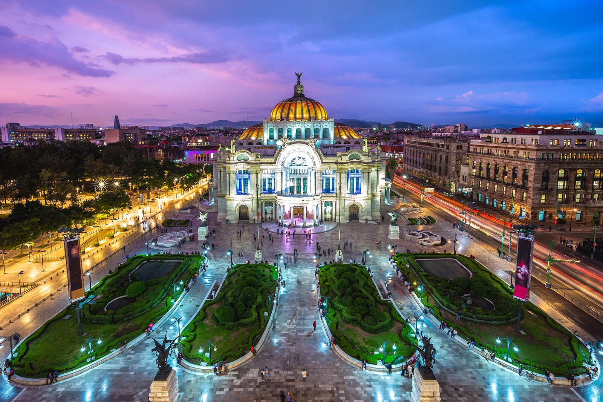
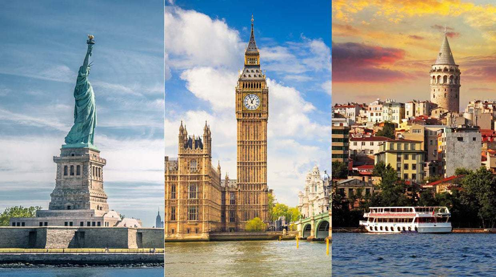

Descubre Nuestros Destinos
Destinos Populares
ARTES
Descubre el Palacio de Bellas Artes en la Ciudad de México: Un ícono arquitectónico y cultural, famoso por su impresionante cúpula dorada y su exquisita fachada. Sumérgete en la rica historia y disfruta de espectáculos de clase mundial en este majestuoso centro de artes escénicas. ¡Una visita obligada para cualquier amante del arte y la cultura!
ICONOS
Tres Iconos Mundiales: Visita la majestuosa Estatua de la Libertad en Nueva York, el emblemático Big Ben en Londres, y la histórica Torre de Gálata en Estambul. Cada uno de estos monumentos ofrece una experiencia única y una ventana a la rica historia y cultura de su ciudad. ¡No te pierdas la oportunidad de descubrir estos destinos icónicos!
MARAVILLAS

Descubre la Torre Eiffel en París: Un símbolo icónico de la ciudad del amor, la Torre Eiffel se alza majestuosamente contra el cielo azul. Rodeada de verdes jardines y flores, esta maravilla arquitectónica ofrece vistas impresionantes y una experiencia inolvidable. ¡No te pierdas la oportunidad de visitar este emblemático monumento!
Testimonios de Clientes
RECUERDOS
"Nuestro viaje a París fue inolvidable. La atención al cliente fue excelente y los tours fueron muy bien organizados." - María G.
MEMORIAS
"Tokio superó todas nuestras expectativas. La mezcla de lo tradicional y lo moderno es simplemente fascinante." - Juan P.